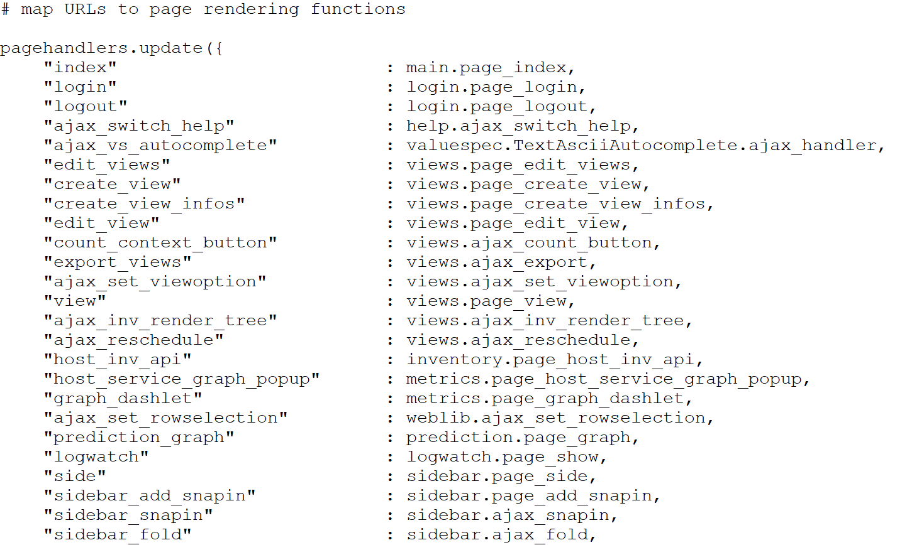

URL" 이 page handlers에 맵핑되는 과정 분석
"side.py URL"이 "page plugin"에 의해서 page handlers 로 연결되는 과정 분석
- .py 이 포함된 요청은 mod_python 설정에서 index.py 모듈의 handler() 함수를 호출
- shipped.py Plugin 모듈에서 /side.py URL의 헨들러는 sidebar.py 임을 찼는다.(routing)
- 헨들러인 sidebar.py 모듈에 HTML page를 렌더링하는 코드가 들어있다.(Tag를 출력하고 Div 로 구획을 나누고, html.write로 문자를 출력한다)
def handler(mod_python_req, fields = None, is_profiling = False):
-> modules.load_all_plugins()
-> def load_all_plugins()
-> pagehandlers.update(pagetypes.page_handlers())
-> page_handlers.update(page_type.page_handlers())
index.py -> handler() -> modules.load_all_plugins() -> execfile() -> plugins/pages/shipped.pagehandlers[] -> side : sidebar.page_side -> sidebar.py 파일의 page_side()
n. 호출한 URL 을 plugins/pages/shipped.py 에서 찼는다. URL 과 page handler 사이를 맵핑한 딕셔너리
modules.load_all_plugins() -> exec() (import 와 달리 plugin 파일을 실행시킨다, Debug 할때 주의하자)
/omd/sites/sjopen/share/check_mk/web/plugins/pages/shipped.py -> Import modules that contain the page functions
pagehandlers.update({ ==> URL 을 key 로 page rendering 가 저장되어 있음
"index" : main.page_index, ==> main.py 파일의 page_index()
"side" : sidebar.page_side, ==> sidebar.py 파일의 page_side()
"dashboard" : dashboard.page_dashboard, ==> dashboard.py 파일의 page_dashboard()
"view" : views.page_view,

/omd/sites/sjopen/share/check_mk/web/plugins/sidebar/shipped.py
/omd/sites/sjopen/share/check_mk/web/plugins/sidebar/wato.py
/omd/sites/sjopen/share/check_mk/web/plugins/sidebar/search.py
/omd/sites/sjopen/share/check_mk/web/plugins/sidebar/nagvis_maps.py
/omd/sites/sjopen/share/check_mk/web/plugins/sidebar/mkeventd.py
/omd/sites/sjopen/share/check_mk/web/plugins/sidebar/bi.py
n. side.py 의 핸들러인 sidebar.py 에서 html.html_head(_("Check_MK Sidebar") 구현 확인
/omd/sites/sjopen/share/check_mk/web/htdocs/sidebar.py
def heading(text):
def sidebar_head():
def render_messages():
def sidebar_foot():
def page_side():
if not config.user.may("general.see_sidebar"):
if config.sidebar_notify_interval is not None:
interval = config.sidebar_notify_interval
html.html_head(_("Check_MK Sidebar"), javascripts=["sidebar"], stylesheets=["sidebar", "status"])
html.write('<body class="side')
n. 우측 상단의 Check_MK Log 제거하기
- 이미지를 출력하지 않도록 html.img 메소드를 삭제하면 Log가 사라진다.
- html.write() 메소드로 원하는 HTML TAG 추가하며 원하는 내용이 출력된다.
def sidebar_head():
html.open_div(id_="side_header")
html.div('', id_="side_fold")
html.open_a(href=config.user.get_attribute("start_url") or config.start_url,
target="main", title=_("Go to main overview"))
######### html.img(src="images/sidebar_top.png", id_="side_bg")
html.write("<h1>This is KTS NIS</h1>") # 테스트로 추가한 내용
html.open_div(id_="side_version")
html.open_a(href="version.py", target="main", title=_("Open release notes"))
html.write(get_check_mk_edition_title())
html.br()
html.write(cmk.__version__)
if werks.may_acknowledge():
num_unacknowledged_werks = werks.num_unacknowledged_incompatible_werks()
if num_unacknowledged_werks:
html.span(num_unacknowledged_werks, class_="unack_werks",
title=_("%d unacknowledged incompatible werks") % num_unacknowledged_werks)
html.close_a()
html.close_div()
html.close_a()
html.close_div()


n. shipped.py 플러그인 모듈에 정의된 tacticaloverview 살펴보기

/omd/sites/sjopen/share/check_mk/web/plugins/sidebar/shipped.py
sidebar_snapins["tactical_overview"] = {
"title" : _("Tactical Overview"),
"description" : _("The total number of hosts and service with and without problems"),
"refresh" : True,
"render" : render_tactical_overview,
"allowed" : [ "user", "admin", "guest" ],
"styles" : snapin_tactical_overview_styles,
}
def render_tactical_overview(extra_filter_headers="", extra_url_variables=None):
......
sidebar_snapins["tactical_overview"] = {
"title" : _("Tactical Overview"),
"description" : _("The total number of hosts and service with and without problems"),
"refresh" : True,
"render" : render_tactical_overview,
"allowed" : [ "user", "admin", "guest" ],
"styles" : snapin_tactical_overview_styles,
....
html.open_table(class_=["content_center", "tacticaloverview"], cellspacing=2, cellpadding=0, border=0)
....
for row in rows:
if row["what"] == "event":
amount, problems, unhandled_problems = row["data"]
stales = 0
# no events open and disabled in local site: don't show events
if amount == 0 and not config.mkeventd_enabled:
continue
else:
amount, problems, unhandled_problems, stales = row["data"]
html.open_tr()
html.th(row["title"])
html.th(_("Problems"))
html.th(_("Unhandled"))
if td_class == 'col4':
html.th(_("Stale"))
html.close_tr()
html.open_tr()
url = html.makeuri_contextless(row["views"]["all"] + extra_url_variables,filename="view.py")
html.open_td(class_=["total", td_class])
html.a(amount, href=url, target="main")
html.close_td()
n. view.py 에 대한 분석
- view 요청에 대한 헨들러인 page_view 를 분석해보자.
- plugin 초기화를 과정에서 여러 종류의 딕셔너리 데이터들이 선언된다.
/omd/sites/sjopen/share/check_mk/web/plugins/views/datasources.py
"view" : views.page_view
def page_view():
bi.reset_cache_status() # needed for status icon
load_views()
view_name = html.var("view_name")
if view_name == None:
raise MKGeneralException(_("Missing the variable view_name in the URL."))
view = available_views.get(view_name)
if not view:
raise MKGeneralException(_("No view defined with the name '%s'.") % html.attrencode(view_name))
# Gather the page context which is needed for the "add to visual" popup menu
# to add e.g. views to dashboards or reports
datasource = multisite_datasources[view['datasource']]
context = visuals.get_context_from_uri_vars(datasource['infos'])
context.update(visuals.get_singlecontext_html_vars(view))
html.set_page_context(context)
prepare_painter_options(view_name)
painter_options.update_from_url(view)
show_view(view, True, True, True)
# Load all views - users or builtins
def load_views():
global multisite_views, available_views
# Skip views which do not belong to known datasources
multisite_views = visuals.load('views', multisite_builtin_views,
skip_func = lambda v: v['datasource'] not in multisite_datasources)
available_views = visuals.available('views', multisite_views)
transform_old_views()